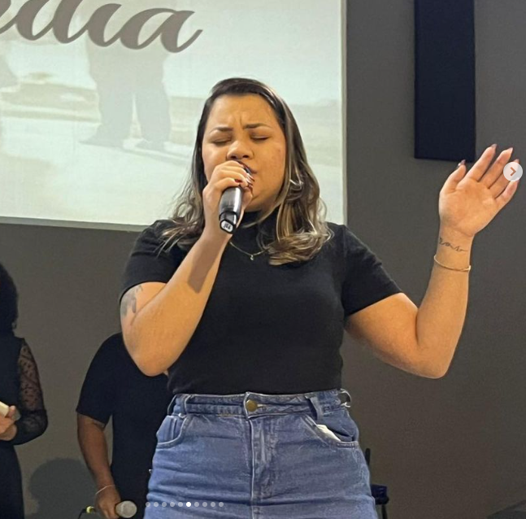

UMA IGREJA PARA SE
PERTENCER!
Bem-vindo à CAMESC! Uma comunidade de fé e amor.
A nossa igreja é extremamente receptiva e acolhedora. Temos um forte foco em cativar os jovens, proporcionando inúmeras oportunidades para quem deseja crescer na pregação e no louvor. Além disso, oferecemos um ambiente que incentiva o desenvolvimento espiritual, ajudando cada membro a crescer espiritualmente. Venha fazer parte da nossa comunidade e experimente um espaço onde você pode se desenvolver em todas as áreas da sua vida!
Na CAMESC, temos três ministérios principais, cada um com uma missão específica e direcionada para diferentes faixas etárias e necessidades:
O Ministério Kids é responsável pelo cuidado e ensino das crianças da nossa igreja. Nosso objetivo é proporcionar um ambiente seguro e divertido onde as crianças possam aprender sobre o amor de Deus e os ensinamentos bíblicos de forma interativa e envolvente. Através de histórias, atividades lúdicas e momentos de louvor, buscamos plantar sementes de fé nos corações dos pequenos, ajudando-os a crescer em sabedoria e graça.
O Ministério Xtreme é dedicado aos adolescentes, oferecendo um espaço onde eles possam se conectar com Deus e uns com os outros. Entendemos os desafios únicos dessa fase da vida e, por isso, criamos atividades e encontros que abordam temas relevantes, promovendo discussões saudáveis e incentivando a formação de uma fé sólida. Nosso objetivo é equipar os adolescentes para viverem de acordo com os princípios bíblicos e serem exemplos em suas escolas e comunidades.
O Ministério Impact é voltado para os jovens, buscando inspirar e capacitar a próxima geração de líderes cristãos. Através de estudos bíblicos profundos, eventos sociais e oportunidades de serviço, ajudamos os jovens a desenvolverem uma relação pessoal com Deus e a encontrarem seu propósito em Cristo. Nosso foco é criar um ambiente onde os jovens possam explorar suas dúvidas, fortalecer sua fé e impactar positivamente o mundo ao seu redor.